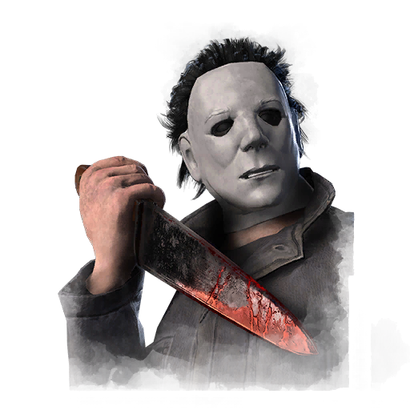

变形者 Shape
- 难度
- 2
- 移速
- 4.2Stalker Mode
- 恐惧范围
- 32 米Stalker Mode 16 米Pursuer Mode 32 米Evil Incarnate
- 能力
- 恶灵附体
- 性别
- Man
- 出身
- 美国人
- 演员
- Frédéric Poirier (BHVR)
背景故事
有些人天生就是恶種，是被蒸馏过的、纯粹形态的邪恶所浸润的種子。迈克尔·迈尔斯便是其中之一。他对给别人带来痛苦毫无愧疚可言。不仅如此，那正是他苦苦追寻的东西。但即便是活着，对那些满脑子都被恐怖填满的人来说，生活依旧艰难。区别只在于各自如何去解决这些问题。对迈克尔而言，他必须通过杀戮，才能寻得一丝内心的平静。当他夺走姐姐的性命时，警方在现场发现了一个沉默的、 dressed 成小丑模样的男孩。然而，当人们遇上正在蔓延的火势时，绝不会往上面浇汽油。可那些官员的所作所为，恰恰是往火上浇油，而他们根本不知道，这会在那孩子的躯体里塑造出怎样的恶魔。将迈克尔送进精神病院，不过是拯救这个孩子的一次徒劳尝试。无效的治疗与夜夜不息的尖叫，只让他变得愈发孤僻、愈发疯狂。人们曾希望迈克尔·迈尔斯最终只是一段插话，一个很快就会被遗忘、被埋葬的符号，一场注定要腐烂消失的失败。但随后……他逃了出来。
专属技能
通用技能 任意杀手均可使用
苦涩低语
Bitter Murmur
淘汰弱者
Cull the Weak
捕鹿人
Deerstalker
煎熬
Distressing
咒术：命运愚者
Hex: Fortune's Fool
咒术：无人幸免于死
Hex: No One Escapes Death
咒术：狩猎快感
Hex: Thrill of the Hunt
黑暗中
In the Dark
隐秘
Insidious
铁掌
Iron Grasp
让他们等着
Keep Them Waiting
毫无保留
No Holds Barred
血狱钩：怪诞圣地
Scourge Hook: Monstrous Shrine
血狱钩：泣血之伤
Scourge Hook: Weeping Wounds
看他们逃窜
See How They Run
破碎希望
Shattered Hope
邋遢屠夫
Sloppy Butcher
暗影间谍
Spies from the Shadows
表现失常
Underperform
不依不饶
Unrelenting
耳语
Whispers
附加品
- 稀有 金发 Blond Hair
- 稀有 男友的备忘录 Boyfriend's Memo
- 罕见 死兔 Dead Rabbit
- 罕见 芬芳发缕 Fragrant Tuft of Hair
- 罕见 玻璃碎片 Glass Fragment
- 精贵 发带蝴蝶结 Hair Bow
- 罕见 发刷 Hair Brush
- 精贵 J·迈尔斯的纪念品 J. Myers Memorial
- 罕见 珠宝 Jewellery
- 精贵 珠宝盒 Jewellery Box
- 精贵 朱迪丝的日记 Judith's Journal
- 活动 朱迪丝的墓碑 Judith's Tombstone
- 传说 一缕头发 Lock of Hair
- 稀有 纪念花 Memorial Flower
- 精贵 镜子碎片 Mirror Shard
- 传说 反光碎片 Reflective Fragment
- 活动 刮花镜子 Scratched Mirror
- 稀有 廉价耳环 Tacky Earrings
- 传说 墓碑碎片 Tombstone Piece
- 传说 化妆镜 Vanity Mirror